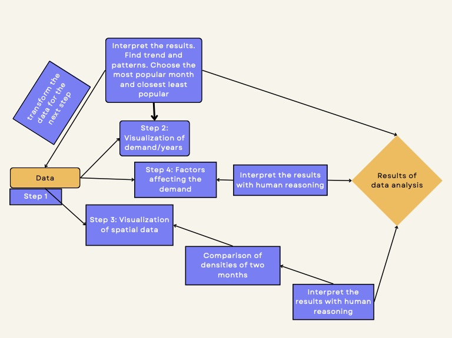
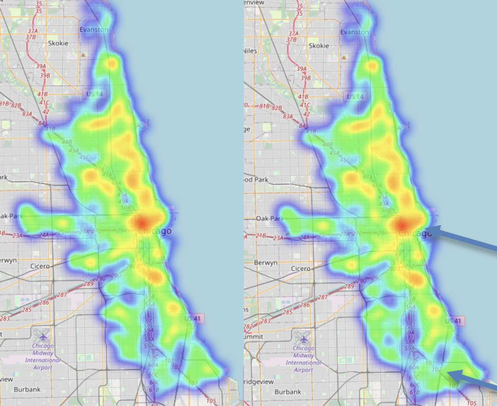
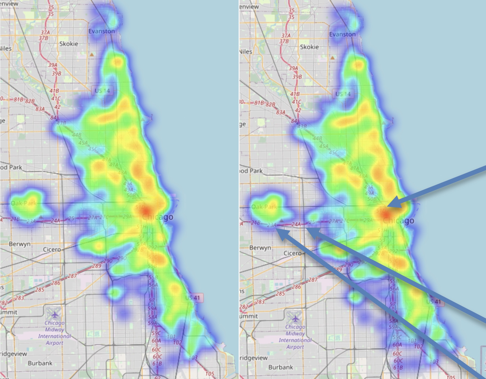

Moscow Real Estate
Analysis of Behaviour After Conflict
Extracts from the report
The aim of this project is to use visual representations of data to find new knowledge and make conclusions out of it.
For this project I decided to use Chickago bike sharing travel data
The visualisations used for that analysis were time series and heatmaps to determine the demand of bike sharing services and the places people visit using them.
Methodology of the Project
The demand for the bike sharing services has increased over the years and the most popular season is summer. In addition to this, I have identified the peak of the usage, which was in August 2017 and the month closest to it with least demand was December 2016.
(On the left) Demand from starting stations (On the right) Demand of destination stations (August 2017)
The analysis of August and December showed that the demand to go to the city centre has not changed and it is still the most popular place to travel to. However, the demand of other stations not close to the city centre changes over time.
(On the left) Demand from starting stations (On the right) Demand of destination stations (December 2016)
The analysis of the factors that affect the demand of services has showed that less people are willing to take bikes during storm weather. It is also supported by median of duration of those trips as they are close to other weather states.